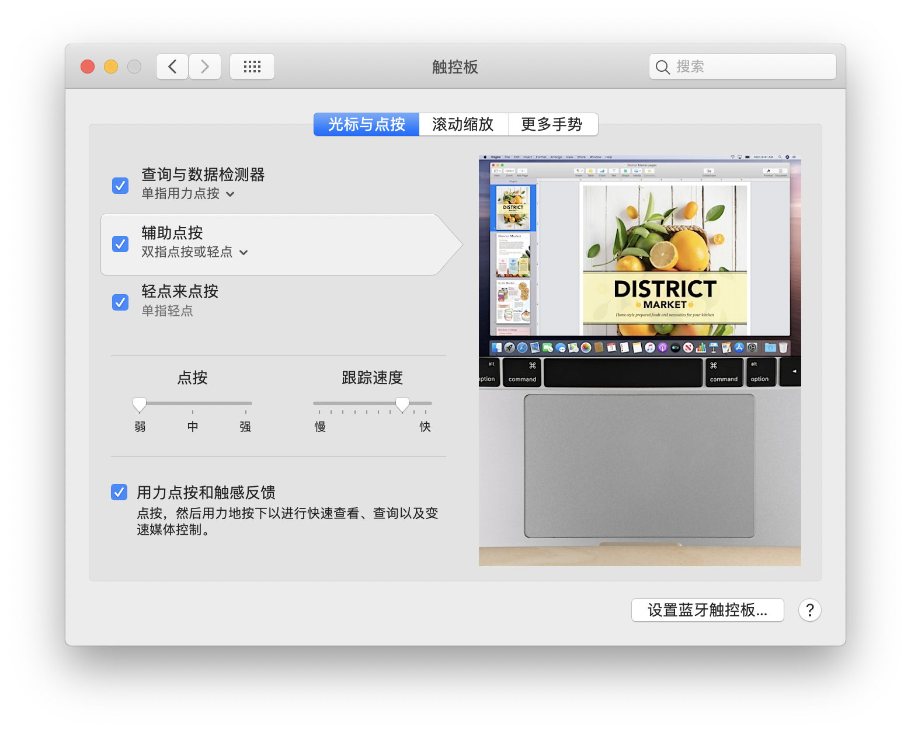
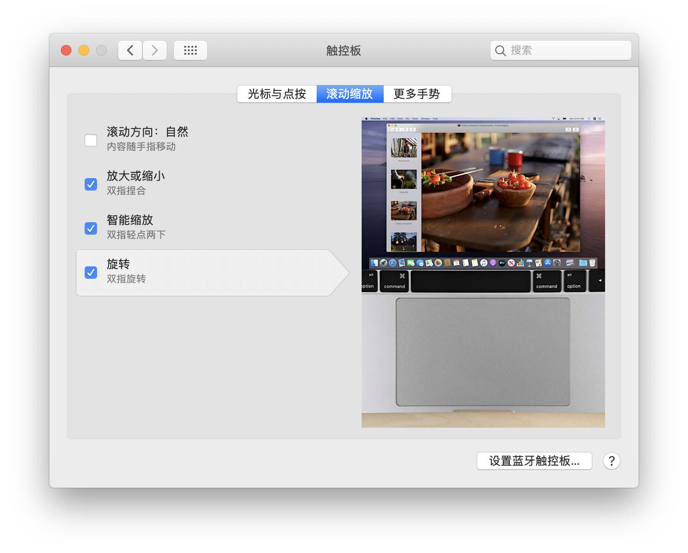
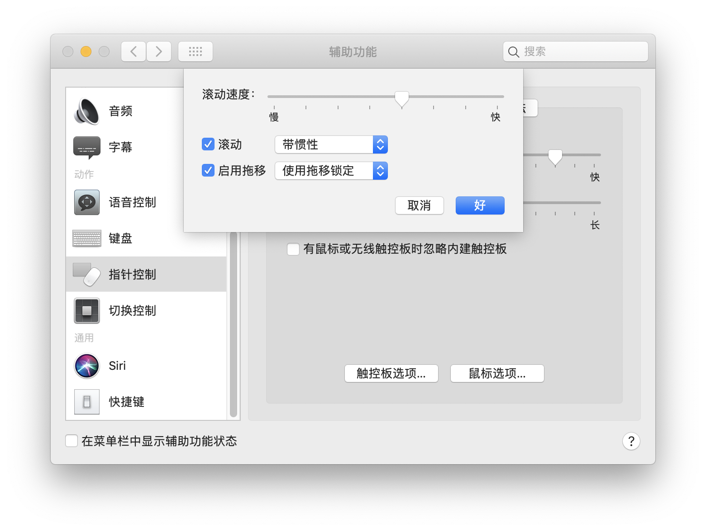

话说为啥会用到Mac Pro呢, 原本我用的小黑, 原因是近期为了搭梯子, 使得连接公司的VPN损坏Σ(っ °Д °;)っ
然后经过一番原因排查, 知道了是因为这个梯子和Windows下的EC会起冲突.
其实如果排除玩游戏, Office, 以及一些必要的社交工具如微信, 钉钉(这排除的有点多啊喂), 我个人是更喜欢Ubuntu的, WIndows系统实在一言难尽つ﹏⊂
于是我将目光投向了Mac OS, 买Mac Pro, 是的我看中的是苹果系统. 但在人生第一次开箱后, 我被震惊了, 这一眼看过去就很高级的做工, 这低调内敛, 精益求精的态度, 我甚至想下一部手机也换Iphone好了(｡･∀･)ﾉﾞ
键盘
有一说一, 对于习惯了常规键盘布局的我来说, 已经形成了肌肉记忆, 在编辑文字或者写代码的时候, 效率还行. 而Mac的键盘布局发生了变化, 一开始用得真的不习惯, 希望后面慢慢适应吧.
同时, Mac上有些常规的键没有, 比如Home, End, PageUp, PageDown等等, 这些可以由组合键完成.
Home: fn left or cmd left
End: fn right or cmd right
PageUp: fn up
PageDown: fn down
Delete: fn backspace
按单词移动: option left or option right
iTerm2快捷键设置:
总体思路是查询原有快捷键, 将其配置赋予自定义的快捷键.
按单词移动:
Preferences > Profiles > Keys
option left Send Escape Sequence b
option right Send Escape Sequence f
按单词删除:
Preferences > Profiles > Keys
Left Option: Normal > Esc+
整行删除:
Preferences > Keys
cmd backspace Send Hex Codes 0x15
移动到句首/尾:
Preferences > Keys
cmd left/right Send Hex Codes 0x01/0x05
撤销:
Preferences > Profiles > Keys
cmd z Send Hex Codes 0x01/0x1f
触控板
系统偏好设置 > 触控板


系统偏好设置 > 辅助功能 > 鼠标与触控板 > 触控板选项

输入法
原本Mac自带的输入法有如下一些问题:
- 智能输入体验差.
- 中英文切换是原本的大写锁定键. 按逗号, 句号键无法查看更多候选.
- 虽然设定里面有设定半角模式, 但实际上没用. 这一点对于俺这样的小码农来说是最难受的.
所以尝试了一下搜狗输入法Mac版, 不得不说, 真滴好用, 不愧是中文输入法界永远滴神!
需要进行一些设置:
- 全局半角.
- 关闭TouchBar功能, 关闭小图标(语音, 截图这些功能对我来说多余了).
相比自带的输入法, 上面提到的问题都不再是问题, 而且如果愿意可以自定义更加适合自己的东西, 比如斗图, 颜表情…用搜狗输入法写到这里, 我还没有翻过提示页, 我这么说, 你懂吧.
文本编辑器
Mac自带的文本编辑器, 很难使, 只能说可以正常打字吧, 嗯.
所以需要一款功能多一些, 但仍然轻量级的文本编辑器, 这里我选择的是Sublime Text.
安装方法是直接到官网下载安装.
配置命令行方法:
1 | $ ln -sv "/Applications/Sublime Text.app/Contents/SharedSupport/bin/subl" /usr/local/bin/subl |
基础APP
包含但不限于:
- 钉钉
- 微信
- Chrome
- EeasyConnect
- ClashX
- Tencent lemon
- The Unarchiver
生产工具
Anaconda3
可在清华镜像下载. 安装完成后, 需要将路径写入环境变量
~/.zsh_profile.1
2# Anaconda3.
export PATH="/Users/opt/anaconda3/bin:$PATH"安装Jupyter插件:
1
2
3
4
5
6
7
8# 安装nbextensions.
$ pip install jupyter_contrib_nbextensions
$ jupyter contrib nbextension install --user
# 安装nbextensions_configurator.
$ pip install jupyter_nbextensions_configurator
$ jupyter nbextensions_configurator enable --user
# 安装yapf, 使用代码格式标准化工具时需要.
pip install yapf安装完成后, 勾选如下配置:
Codefolding&Codefolding in Editor: 代码折叠.Move selected cells: 按住option可上下移动cells.Toggle all line numbers: 显示行数.AutoSaveTime: 自动按时保存.Hide Header:control H隐藏/展现工具栏.Highlight selected word: 变量高亮.Table of Contents: 目录.Code prettify: 代码格式美化.ExecuteTime: 显示代码执行时间.ScrollDown: 输出自动下滑.
PyCharm
下载安装, 并配置解释器路径和主题.
Office
下载官网最新版, 然后寻找激活方法. 可选择装部分应用.
Git
一般自带. 需要创建公钥私钥, GitHub关联.
1
$ ssh-keygen
Node.js
官网下载安装.
typora
官网下载安装.
1
2# 在~/.zsh_profile中添加如下, 使其可在终端快速启动.
alias typora="open -a typora"
java8
为了配合
Spark的使用.1
2
3
4
5
6# 更新brew库.
$ brew tap homebrew/cask-versions
# 制定版本安装.
$ brew cask install adoptopenjdk8
# 查看是否安装成功.
$ java -version
终端
homebrew
1
/usr/bin/ruby -e "$(curl -fsSL https://raw.githubusercontent.com/Homebrew/install/master/install)"
iTerm2
官网下载安装.
设置为默认终端.
调整字体大小15, 光标闪动, 色彩对比度.
preference => Keys => Hotkey => Show/hide iTerm2 with a system-wide hotkey, 设置为command ..
preference => profiles => colors => Color Presets => Solarized Light.
oh-my-zsh
1
2
3
4
5
6
7
8# 查看安装的shell.
$ cat /etc/shells
# 查看当前shell.
$ echo $SHELL
# 切换shell.
$ chsh -s /bin/zsh
# 安装oh-my-zsh
$ sh -c "$(curl -fsSL https://raw.github.com/robbyrussell/oh-my-zsh/master/tools/install.sh)"1
2# 配置oh-my-zsh.
$ open -t .zshrc1
2
3
4# 主题列表: https://github.com/ohmyzsh/ohmyzsh/wiki/themes
ZSH_THEME=avit
# 插件.
plugins=(git osx zsh-autosuggestions zsh-syntax-highlighting)1
2
3
4
5# 插件中的zsh-autosuggestions 和 zsh-syntax-highlighting 是自定义安装的插件, 需要用 git 将插件 clone 到指定插件目录下：
# 自动提示插件
git clone git://github.com/zsh-users/zsh-autosuggestions $ZSH_CUSTOM/plugins/zsh-autosuggestions
# 语法高亮插件
git clone git://github.com/zsh-users/zsh-syntax-highlighting $ZSH_CUSTOM/plugins/zsh-syntax-highlighting
.DS_Store
.DS_Store这个文件没什么用, 但是却会在很多传输文件的时候带来不必要的问题. 比如在使用Git的时候.
有没有什么办法能够完全禁止呢? 暂时没找到.
删除所有目录下的.DS_Store:
1 | $ sudo find / -name ".DS_Store" -depth -exec rm {} \; |
这条命令可以临时删除, 但后续只要文件夹有一些改动, 又回自动生成.
针对Git, 可以设定全局的.gitignore_global进行一定程度上的帮助. 创建~/.gitignore_global, 其中写入:
1 | # .gitignore_global |
同时在~./gitconfig中引入设置:
1 | [user] |
或者输入如下命令(推荐):
1 | git config --global core.excludesfile ~/.gitignore_global |
TouchBar
最开始我觉得Mac的TouchBar是鸡肋, 花里胡哨的, 还我F1~F12(ﾟДﾟ*)ﾉ
比如Pycharm里面的运行快捷键是shift F10, 你这都没有这个键怎么办啊? 哦…变成cmd shift R了啊, 那没事了…
TouchBar的存在, 可以在系统层面, 或者一些APP上, 将一些功能直接放上去, 只要设置合理, 在熟练使用以后, 我相信效率是会提高的.
系统层面的TouchBar设置, 这个根据自己喜好就行. 我是将调度管理,截屏, 静音设置成默认, 同时将调度管理, 截屏, 音量调节, 亮度调节, 锁屏, 睡眠放到详细页.
一些APP, 比如PyCharm是支持定制TouchBar的. 对PyCharm来说, 可以在Preferences > Appearance & Behavior > Menus and Tollbars > Touch Bar中进行设置.
但是关于显示图标, 需要自己指定图案. 我在谷歌上搜索touchbar icon download这个关键词, 找到了这个网站, 提供了TouchBar图标的下载地址.
然鹅, 直接使用里面的图标, 仍然会觉得有些蛋疼(* ￣︿￣), 因为你看自带的TouchBar图标, 都是亮亮的, 咱这图标是黑黑的, 白天用着还行, 光线不好的时候用着一片黑啊…
于是, 我想到了利用Python来修改图标颜色, 经过一番尝试, 成功了（＃￣～￣＃）
代码如下:
1 | from PIL import Image |
这段代码的思路, 是咱们手里的原始图片, 是LA格式的, 众所周知RGB格式有三个通道, 而这种格式呢有两个通道. 第一个通道控制颜色, 0 ~ 255, 其中0是黑色, 255是白色; 第二个通道控制是否透明, 0 ~ 255, 0表示透明, 255表示不透明. 所以我们只要将第一个通道的数值, 全部改为255即可o(≧口≦)o
由此, 我在PyCharm的TouchBar上, 配置了Home, End等功能, 某种程度上加快了编辑效率.
其他
删除一些无用APP
菜单栏 > 关于本机 > 储存空间 > 管理
在其中可以看到一些可删除的系统自带的APP, 删除后可以节省几个G的空间.
设置访达的侧边栏
访达 > 偏好设置
设置开启新窗口为用户根目录. 并将其显示到边栏中.
键盘
为了拥有更好的体验, 我买了一块外接无线键盘. 主要就是为了Hone, End, PageUp, PageDown, Delete键. 然后当我买入后, 发现, 这些键是有了, 但是在一些APP上的功能却不是我所想的. 比如想要移动光标到当前行第一列或者最后一列, 使用cmd left/right肯定是可以的, 但是Home和End却不一定行…还好与代码编辑相关的PyCharm与Jupyter可以与预期一致.